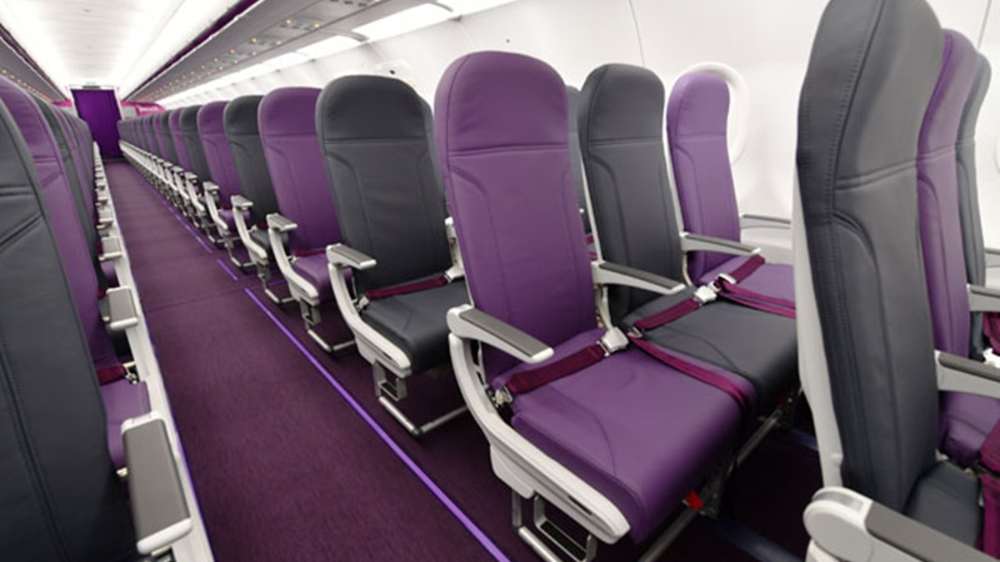
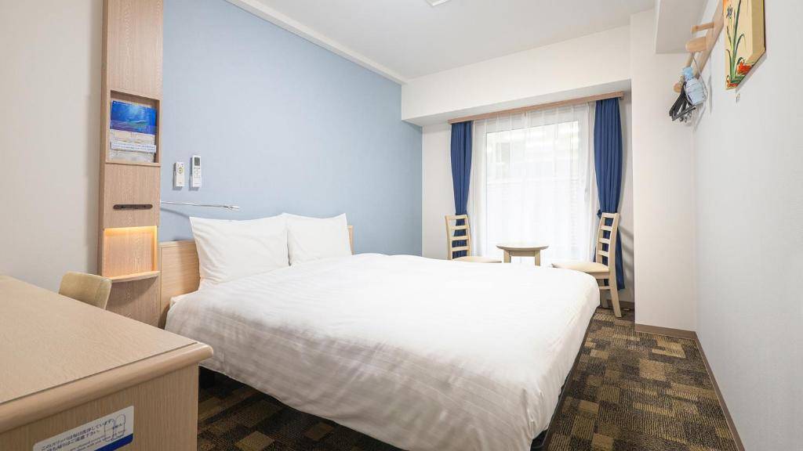
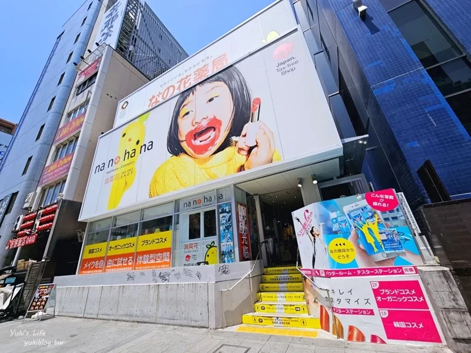
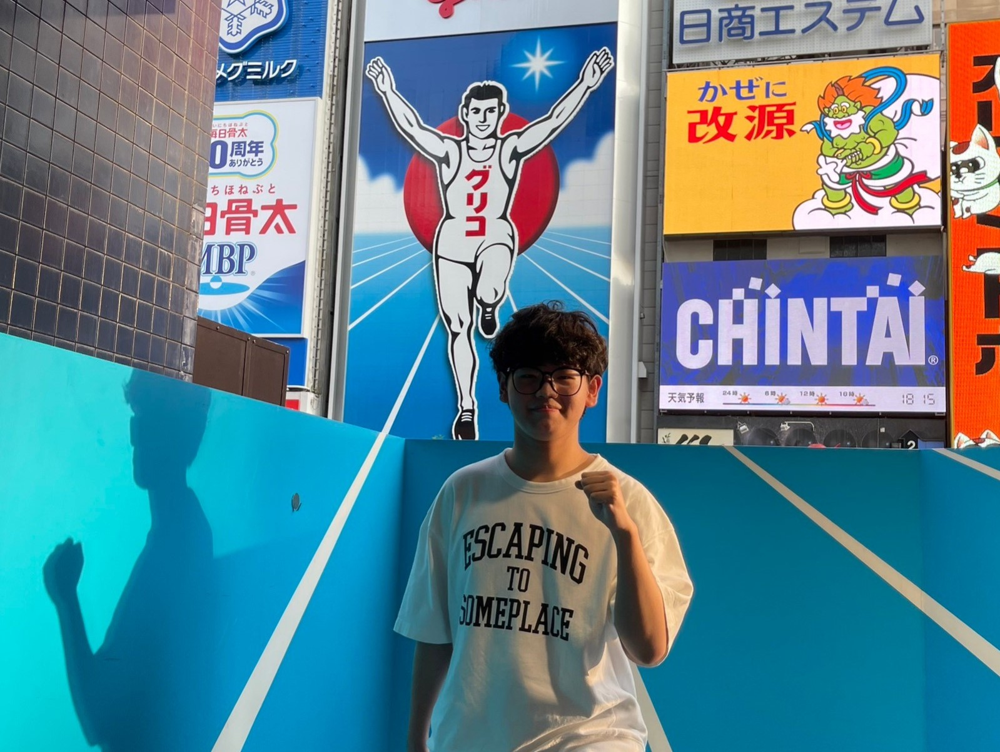
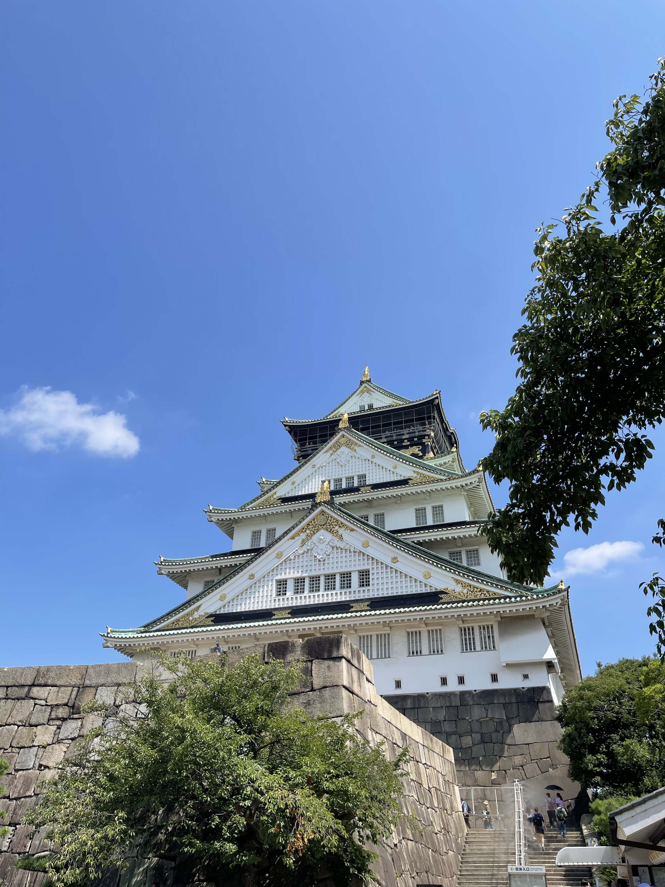
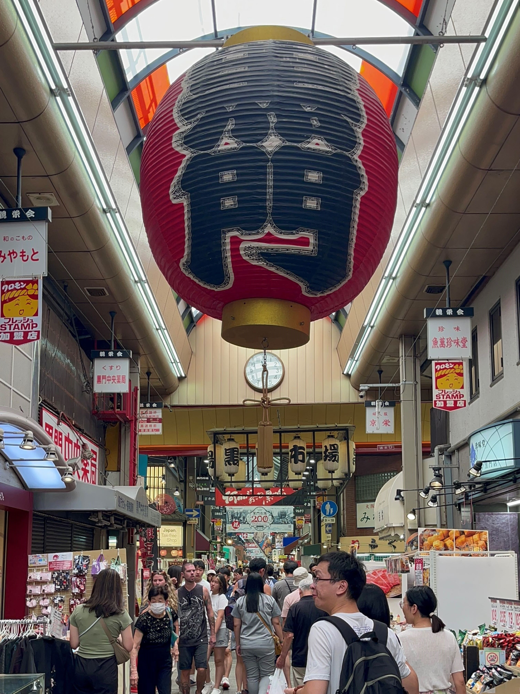
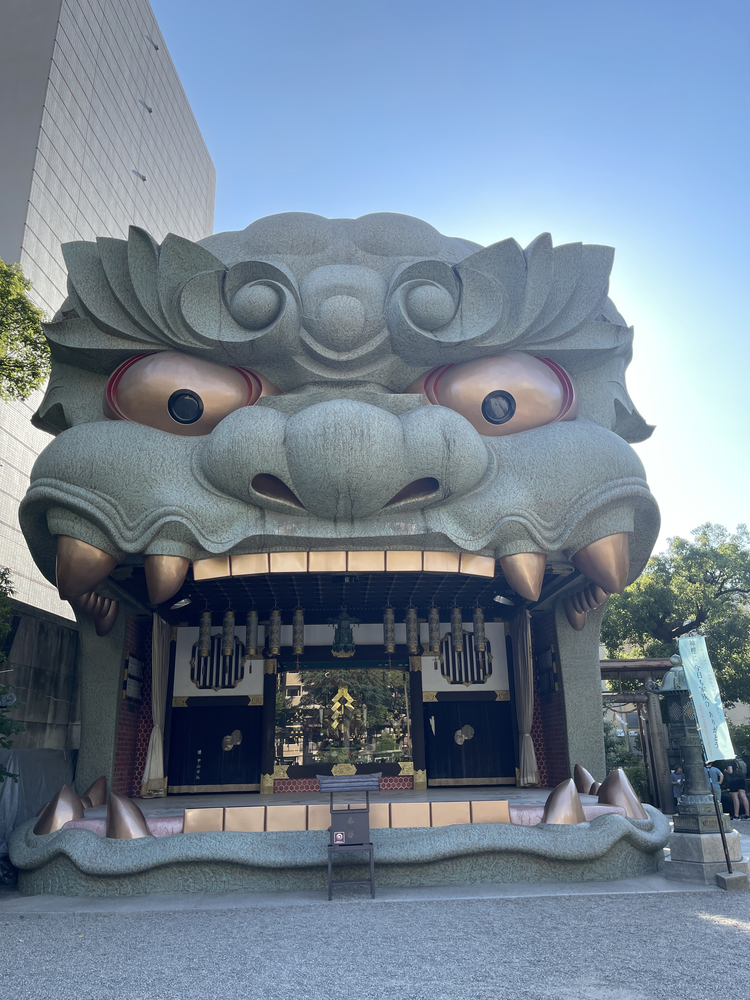
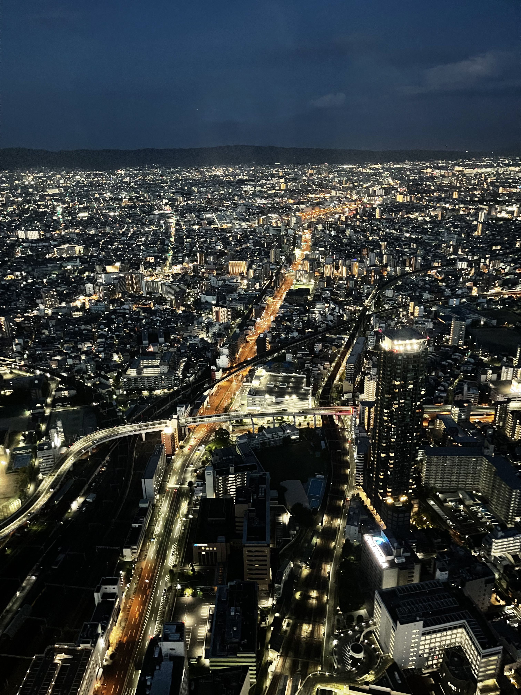

日本大阪自由行6天5夜
懶人包行程安排!!!
實際到訪日期:2023 7/21~7/26
機票資訊
這次我所搭乘的航空公司為樂桃航空，機票加上來回行李20KG大約是13000元，整題來說座位空間還算適中(本人174cm 80kg)，這邊放上一張示意圖給大家看。礙於是廉價航空的緣故，因此座位並未配置螢幕及未提供餐點，如有需要可自行帶平板作為消遣工具，另外飛機上有提供簡單餐飲如泡麵等，不過需額外收費(注意:只接收日圓喔!)。整體飛行時間約2小時30分鐘
住宿資訊
此次住的飯店名為東橫inn，為日本第二大的連鎖旅館，房間大小不大不過價錢平易近人，且這次居住的位置正好是在熱鬧的道頓堀以及心齋橋商圈旁，故在通勤方面以及吃喝玩樂層面可以說是應有盡有。早餐屬於那種標準的日式早餐自助吧，就是簡單足夠填飽肚子的那種，這次定的是雙人房平均換算下來一個人1000一碗(含早餐)，是小資族的好選擇!
第一天行程
到達當地已經是16:00的緣故，故當天並沒有安排特別行程，只是簡單在飯店附近的道頓堀以及心齋橋商圈逛逛而已。超推薦大家前去nanohana戎橋店旁的拍攝地，更有融為一體的感覺喔!

nanohana戎橋店

拍照的實體效果!
第二天行程
主要行程:大阪城➡黑門市場➡難波八阪神社➡阿倍野觀景台
早上9:00於飯店出門，先是前往大阪城探索歷史建築，門票是600日圓非常值得大家前往，可以深刻了解建築豐厚的歷史。逛完大阪城後也準備進入午餐時間了，因此我們選擇前往距大阪城15鐘車程的黑門市場，雖然說整體價格偏高但食物品質還是在水準之上的，以下推薦兩家一定要前往的店鋪!分別是:黑門三平、まぐろや黒銀。接著步行15分鐘前往八阪神社，欣賞極具觀賞性的巨大獅頭，非常有記憶點!下午近傍晚是前去阿倍野觀景台的絕佳時間，可以一同享用該處的餐廳一同欣賞美景，眺望繁華的大阪夜景

大阪城

黑門市場

八阪神社
